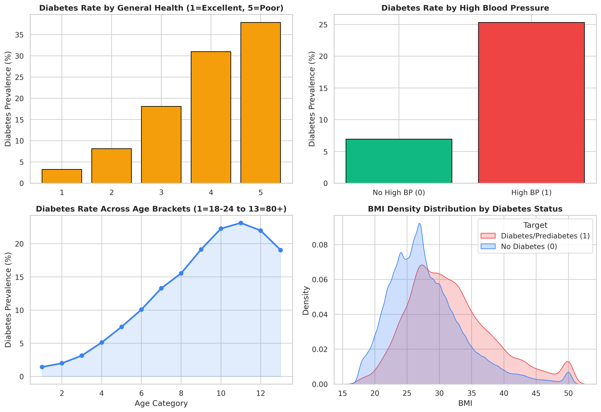

Predicting Diabetes Risk from CDC BRFSS Health Indicators
An end-to-end supervised machine learning study benchmarking Logistic Regression, Decision Tree, Random Forest, and XGBoost on 253,680 U.S. public health survey records—focusing on class-imbalance handling, high-recall clinical screening, and interpretable risk factors.
CDC Diabetes Health Indicators (BRFSS)
Why This Dataset?
Sourced from Kaggle (CDC BRFSS 2015 — diabetes_binary_health_indicators_BRFSS2015.csv) and mirrored on the UCI ML Repository, this dataset captures non-invasive health indicators—blood pressure, cholesterol, BMI, physical activity, diet, and demographics—for 253,680 respondents. Unlike small toy medical datasets, its scale and realistic ~86/14 class imbalance require real ML engineering: deduplication to prevent leakage, outlier capping, stratified splitting, and cost-sensitive learning.
Quick Audit Stats
- Missing Values0 (0.0%)
- Duplicates Removed24,206
- Positive Class Share15.29%
- Train / Test Split80% / 20%
- Validation StrategyStratified
Feature Dictionary (21 Predictors + 1 Target)
| Variable | Type | Category | Description & Scale |
|---|
End-to-End Machine Learning Pipeline
Deduplication
Dropped 24,206 exact duplicate records before splitting so identical survey profiles cannot leak from training into the test set.
Outlier Capping
Capped extreme self-reported BMI values (up to 98) at the 1st–99th percentiles (18.0–50.0) to stabilize linear coefficients without losing rows.
Leak-Free Scaling
Applied a stratified 80/20 split and fitted StandardScaler strictly inside a scikit-learn Pipeline on training folds only.
Imbalance Weighting
Used class_weight="balanced" and XGBoost scale_pos_weight=5.54 so models prioritize detecting diabetic cases over naive accuracy.
Key Data Distributions & Risk Signals



GenHlth, HighBP, DiffWalk, BMI, and HighChol exhibit the strongest positive linear associations with Diabetes_binary, while Income and Education correlate negatively.
Benchmarking Four Classification Algorithms
Interactive Model Metric Comparison
Top Predictive Features (Winning Model)
Held-Out Test Set Metrics (20% Stratified Split — 45,895 samples)
| Model | ROC-AUC | Balanced Acc | Recall (Pos) | Precision | F1-Score | Accuracy |
|---|


Why Our Modeling Decisions Work
Why Recall & ROC-AUC over Accuracy?
A trivial model predicting "No Diabetes" for everyone achieves ~85% accuracy while missing 100% of sick patients. Balancing class weights trades raw accuracy for ~76% sensitivity on diabetic cases.
Why Ensemble Trees Beat Linear Models?
Diabetes risk involves nonlinear interactions (e.g., HighBP + high BMI + Age). Random Forest and XGBoost capture these splits natively without manual polynomial expansion, achieving ROC-AUC of 0.8176 and 0.8170 respectively.
Limitations & Next Steps
BRFSS responses are self-reported and lack lab biomarkers (HbA1c, fasting glucose). Future work includes threshold tuning for clinical precision targets and SHAP local explainability.
Project Deliverables — DS422 (ML-I) Section E1
Student ID: 232-35-733 · Teacher Initial: FH · Access the Jupyter Notebook, dataset mirrors, and exported plots below.